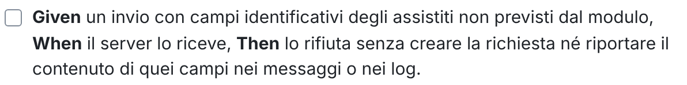
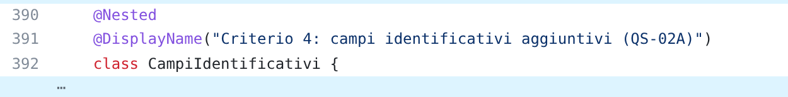
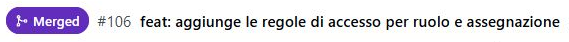
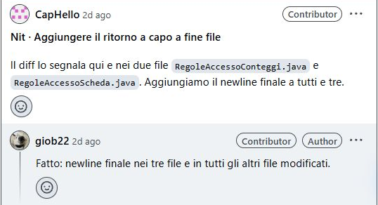
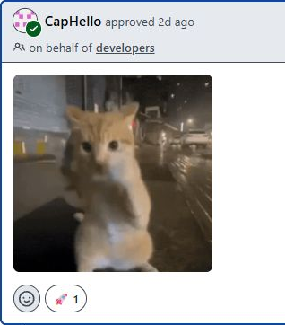

Pinguini alla Fragola
PICUS
Review della seconda iterazione
Prima iterazione di costruzione
Baseline architetturale e walking skeleton
Software Architecture Design · a.a. 2026/27
01 / 11
Incremento
Sprint Goal e perimetro MVP
Coordinare una richiesta OPT fino all’accordo confermato o al rifiuto definitivo.
Percorso con accordo
Esito alternativo dell’MVP
Rifiutata
02 / 11
Attribute-Driven Design
Driver architetturali
Gli scenari di qualità orientano le scelte e indicano come verificarle.
Ogni OPT vede le proprie
richieste.
sulla singola richiesta.
senza dati della pratica.
Nessun identificativo degli
assistiti.
dei campi ammessi.
l’invio. Nessuna richiesta
salvata.
Invio da smartphone.
layout responsive.
minuti. Prova con utenti
da eseguire.
Vincoli
Java 25, Spring Boot e PostgreSQL. Un solo rilascio, riproducibile con Docker Compose.
03 / 11
Baseline architetturale
Decisioni e trade-off
Tre ADR documentano la scelta, l’alternativa considerata e il costo accettato.
Organizzazione
del codice
Cinque moduli con
API e DTO.
Rete, identità e consistenza
distribuite.
rilascio condivisi. Confini
verificati in review.
Ciclo della
richiesta
con presa in carico
esplicita.
l’appuntamento, da
sincronizzare.
accordo aggiornati nella
stessa transazione.
Permessi e input
pratica e lista dei campi
ammessi.
avrebbero gli stessi
permessi sulla pratica.
una regola di accesso
e un DTO.
04 / 11
Baseline architetturale
Module View
Cinque moduli organizzati per responsabilità, con contratti pubblici e dati propri.
Struttura di un modulo
e persistenza
Richieste usa le API di Utenze, Catalogo e Comunicazioni.
Il package shared raccoglie i componenti tecnici comuni.
05 / 11
Baseline architetturale
Component & Connector View
Le richieste HTTP entrano in un solo processo JVM. L’applicazione accede a PostgreSQL via JDBC.
erogatore
HTTP
picus.jar · Processo JVM
DTO
Porte
JDBC
Collaborazioni interne
Chiamate sincrone su API Java e DTO.
Dipendenze iniettate via costruttore.
Confine del caso d’uso
Permessi e regole prima della scrittura.
Transazioni locali per aggiornare gli stati.
06 / 11
Baseline architetturale
Deployment View
Docker Compose in locale e su un VPS OVHcloud KVM2.
HTTP
Host · Docker Compose
Spring Boot e Tomcat
JDBC 5432
Volume persistente picus-dati
Il deploy dello Sprint 2 è ospitato nell’Unione europea (GDPR).
07 / 11
Demo live · 2 minuti
Walking skeleton
Una richiesta con dati sintetici, dall’invio della OPT alla consultazione dell’accordo.
01
OPT
Invia la richiesta con misura, destinatario e comune.
Creata
02
Banco
Prende in carico la pratica e contatta un candidato.
Presa in carico
03
Erogatore
Comunica la sua disponibilità al Banco.
Presa in carico
04
Banco e OPT
Il Banco assegna, poi conferma. La OPT consulta.
In programmazione, poi Confermata
Esito da mostrare
Stesso ID
Confermata
La OPT titolare riapre la pratica
e vede i dettagli dell’accordo
salvato.
08 / 11
Verifica
Dai criteri di accettazione ai test
I gruppi @Nested riprendono la numerazione dei criteri della user story.
USER STORY #48
Criterio 4 · QS-02A
Il server rifiuta i campi identificativi extra
senza creare la richiesta.

RichiesteControllerTest · PR #130
CampiIdentificativi
24 casi parametrizzati verificano il rifiuto
e l’assenza di nuove richieste.

Given
Dati sintetici e un campo extra
When
Invio HTTP con MockMvc
Then
Richiesta rifiutata. Zero scritture.
09 / 11
Collaborazione
La review della PR #106
Workflow del team

Richiesta di modifica e risposta

Approvazione

10 / 11
Roadmap
Prossime iterazioni
La priorità proposta è chiudere il ciclo delle comunicazioni del Banco.
Proposta per il prossimo sprint
Comunicazioni
Invii del Banco, destinatari e
conferme di ricezione.
Epic #22
Rendicontazione
Schede operatori, conteggi OPT
e riepiloghi trimestrali.
Amministrazione
Gestione di account, catalogo
e offerta degli erogatori.
Completamento dei flussi
Recupero accesso, annullamento
e altre operazioni.
Architecture backlog
Ripristino, contatti senza risposta
e confini di M5 per gRPC.
11 / 11